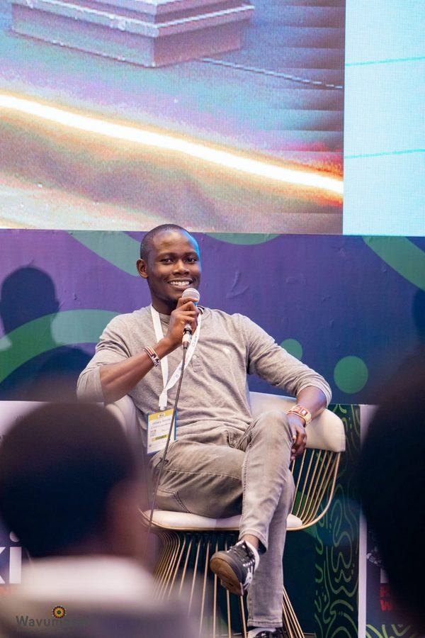

About
Programmes end. The systems I build outlast me.

The test is simple: what still runs after I leave. I lead EdTech and digital skills work where access is thinnest, across pastoralist, rural and underserved Kenya. Through the HPF ICT Academy I run programmes end to end: recruitment and onboarding, curriculum grounded in Learning Through Play (LTP) and Social Emotional Learning (SEL), training delivery, monitoring and evaluation, and the impact reporting funders rely on. The academy runs on a KES 25M annual budget across web development, cybersecurity and data analytics tracks. A recent cohort of 26 fellows closed at a 95% pass rate with 86% completion, and graduates are already earning verified income through digital work platforms. Which is the point: skills that convert directly into household income. What outlasts me is the infrastructure underneath, the curricula another trainer can pick up, the standard operating procedures I wrote for the schools programme, the AI-assisted learning platforms, and the Salesforce and Power BI systems that keep reporting long after I have moved on.